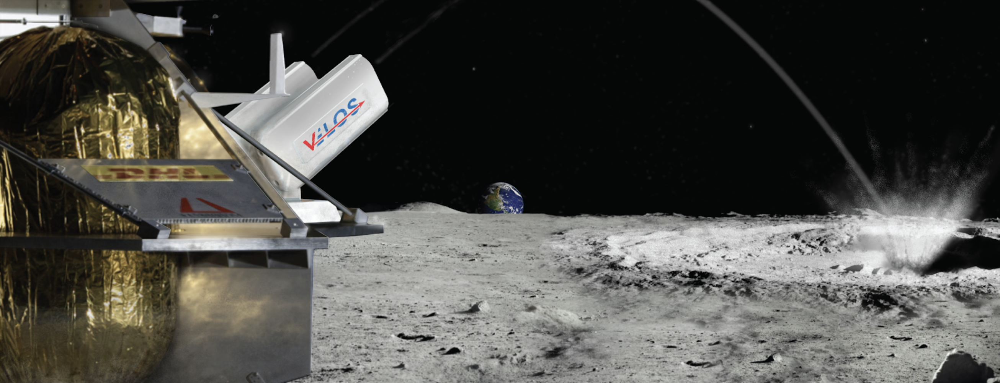

Background Info
Fun fact: There is water on the Moon!
With speculations of water on the Moon dating all the way back to 1645 by Dutch astronomer Michael van Langren, an official confirmation was widely accepted more recently in 2018 using data from the Moon Mineralogy Mapper (M3), an instrument carried aboard ISRO's (Indian Space Research Organization) Chandrayaan-1.
Although it is Earth’s closest neighbor, there is still much to learn about the Moon, particularly in the Permanently Shadowed Regions (PSRs) near the lunar polar regions that have remained dark for billions of years. NASA now plans to land humans on the Moon by 2026 (formerly 2024) with the Artemis program, but before astronauts step on the lunar surface again, rigorous science and exploration activities on the Moon will be conducted to reduce technical and programmatic risk for the human missions. These robotic precursor missions will further investigate regions of interest to human explorers, including the Moon’s polar regions, and will provide information to the engineers designing modern lunar surface systems.
The exploration of PSRs in lunar polar regions is an important step towards locating and characterizing lunar water, or other hydrogen-rich deposits. So, what's the catch?
The Moon has what's called an exosphere (essentially a very thin atmosphere) and its temperature can spike to 250°F (121°C) in daylight, then plummet after nightfall to -208°F (-133°C). NASA’s Lunar Reconnaissance Orbiter has measured temperatures lower than -410°F (-246°C) near PSRs; An extreme temprature that many electronics cannot withstand for long...
Project Overview
The challenge: Design an innovative solution to support NASA’s exploration objectives for the Permanently Shadowed Regions (PSRs) in and near the Moon's polar regions.
Our solution: Project Velos (Variable Exploratory Lunar Observation System), is a multi-probe exploratory system capable of launching sensor probes over 100m into a PSR.
My contribution: Develop an immersive VR experience that effectively showcases our solution in a compelling and engaging manner.
Timeline
January 2020 - October 2020
How It Works
The Velos launcher offers a reliable spring-based mechanism, enables various sensor payloads, and is a scalable solution with the quantity of probes it can hold.
Launcher & Probes
Each probe is equiped with a configurable suite of sensors designed to optimize data collection potential and to survive the harsh lunar environment. The system relays information through a mesh network, with the launcher acting as a "root" node and the probes acting as "leaf" nodes. This allows for the system to act similar to cell towers, where they can relay data through each other as a means of increasing their reach and reliability.
Design Process
The concept I envisioned was to let users experience walking on the Moon's surface, giving them a front-row seat to observe the potential of an unmanned operation. I thought about what would capture people's attention most effectively—and the answer was clear: stepping into the role of an astronaut.
Storyboard
To set the stage, I developed a Unity 3D project using the XR Interaction Toolkit to power the interaction system, ensuring seamless and intuitive VR functionality. To establish a sense of scale within the environment, I incorporated basic test objects for initial exploration. The skybox was custom-designed in Photoshop to accurately depict the vast darkness of space, enhancing the immersive atmosphere. For the lunar surface, I crafted a tileable texture inspired by real lunar imagery and utilized the Terrain Toolkit to sculpt a realistic and detailed landscape, bringing the Moon's surface to life.
Virtual Environment

With the lunar environment complete, I conducted initial user testing with colleagues and quickly discovered their strong desire to explore. While walking through space was entertaining, it became clear that I needed to implement clearer guidelines to focus the experience without limiting the sense of freedom.
I switched the locomotion system from continuous movement to teleportation, allowing users to point and click to move. This reduced nausea and guided users to specific areas, delivering information step by step. It also intuitively prevented them from skipping key details, a common issue in free-roam environments.
Each teleportation point featured a 3D interface with sci-fi-inspired designs, animations, interactables, and even a mission control voiceover to guide users through our proposal.
User Interfaces

The default controllers felt disconnected and broke immersion, so I enhanced the experience by rigging astronaut gloves that responded to the user's grip on the VR controllers, making them feel truly in space.
Becoming the Astronaut
Refining the Experience
With the core content complete and a clear user flow established, I focused on refining the experience with interactive elements. Users could explore an exploded view of the probe assembly and engage in a gamified probe launch by aiming at targets. As a final touch, I added an Easter egg honoring Alan Shepard's iconic Apollo 14 moment, providing a memorable conclusion to the experience.
Final Touches

Results
Although my team didn't win first place, we placed as finalists and earned the Forum Award for Innovation, with special recognition for my VR application, which secured us the award.
This project left me inspired by VR’s potential beyond entertainment—showing how it can deeply connect people with ideas. Since then, I’ve designed numerous AR/VR experiences, including an internship with NASA.
While the VR experience was initially shared on SideQuest, a third-party marketplace for Oculus Quest, it has since been deprecated due to rapid advancements in VR technology. However, you can still watch the full experience on YouTube.